우리 아이 키,
지금 어디쯤일까요?
아이의 성장은
성장호르몬 하나로만 결정되지 않습니다
사춘기 진행, 수면, 갑상선, 스트레스, 체중, 자세까지
함께 살펴야 건강한 성장 방향을 잡을 수 있습니다.
연세새봄은 아이의 성장 방해 요인을 통합적으로 확인합니다.
성장 검사를 고려해볼 수 있는 경우
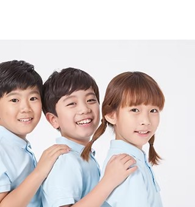
눈에 띄게 작은 경우
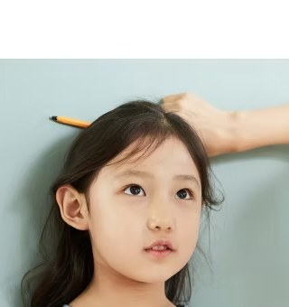
느린 경우
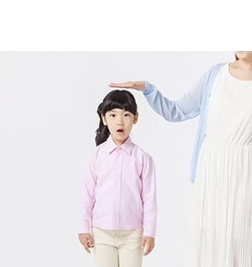
갑자기 변한 경우
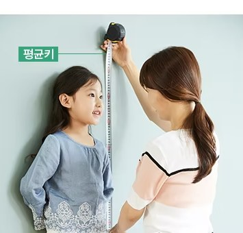
10cm 이상 작은 경우
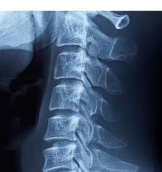
있는 경우
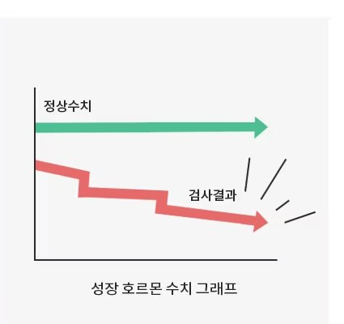
의심되는 경우
키 성장 확인 시기는 언제일까요?
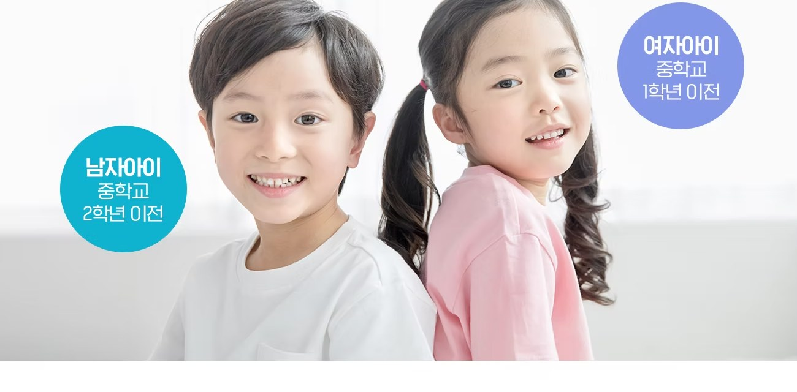
성장 치료의 효과는 성장판 상태와 사춘기 진행 정도에 따라 달라질 수 있습니다.
검사는 치료 결정과 별개로 진행할 수 있으므로,
성장 속도가 걱정된다면 먼저 현재 상태를 확인해보는 것이 좋습니다.
성장호르몬만 보는 치료가 아닙니다
연세새봄의 통합 성장 솔루션
연세새봄은 성장호르몬뿐 아니라 성호르몬, 수면, 갑상선, 스트레스, 체중, 자세를 함께 평가합니다. 아이의 성장 방해 요인을 찾고, 개인별 성장 방향을 설계합니다.
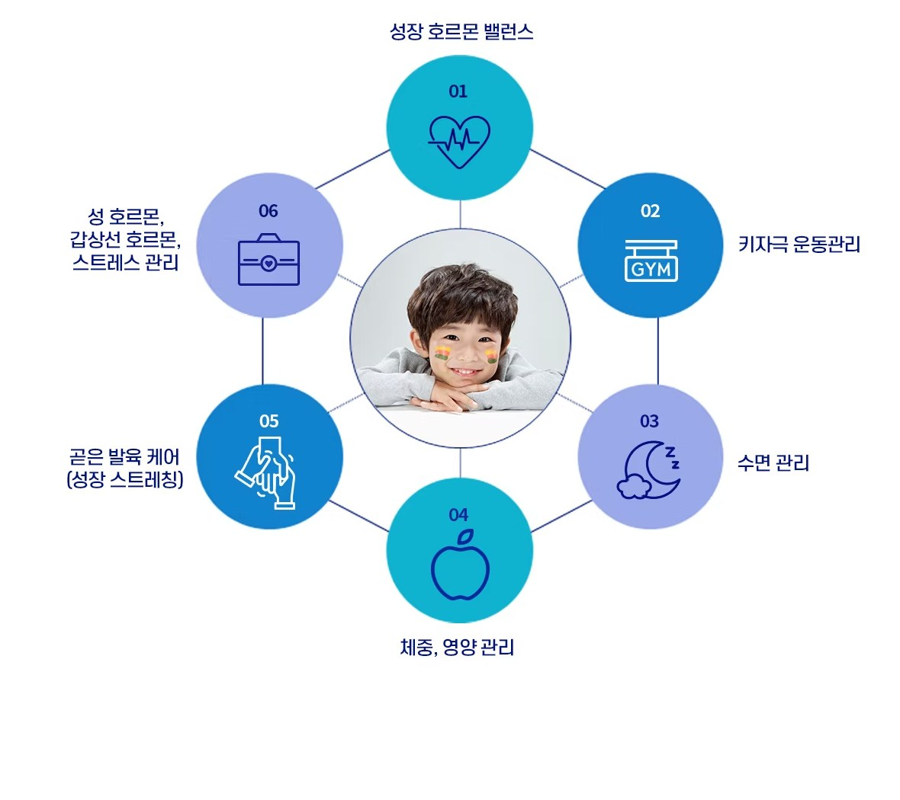
호르몬 밸런스를 위한
3가지 핵심 관리
불균형 진단 및 체계적 관리
성장호르몬 외에도 성·수면·갑상선·스트레스 호르몬까지 전체 균형을 확인합니다.
성조숙증 · 2차 성징 관리
사춘기 진행 속도와 성장판 상태를 함께 살펴 건강한 성장 방향을 잡습니다.
성장을 고려한 체중 조절
성장기 아이에게 필요한 영양을 고려하며 체중과 키 성장을 함께 관리합니다.
우리 아이에게 맞는
성장 관리 유형
아이마다 성장을 방해하는 원인은 다릅니다.
아래 항목 중 해당되는 유형을 선택해
필요한 관리 방향을 확인해보세요.
체중이 늘면 키도 클까요?
비만형 성장은 다르게 봐야 합니다
성장기 비만은 체중 문제에 그치지 않고 성호르몬 분비와 사춘기 진행에도 영향을 줄 수 있습니다. 아이의 체중, 성장 속도, 생활습관을 함께 확인하는 것이 중요합니다.
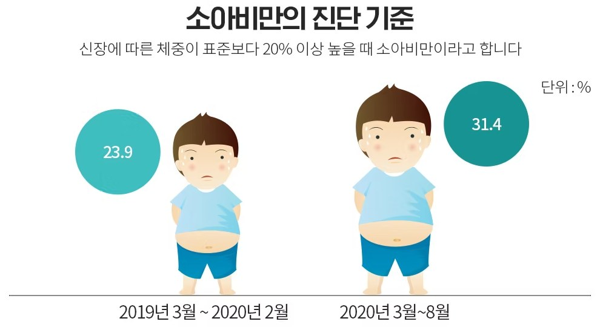
성장기 아이들의 살은
모두 키로 가지 않습니다
과도한 체지방은 성장호르몬 작용과 사춘기 진행에 영향을 줄 수 있습니다. 따라서 성장기 체중 관리는 단순한 다이어트가 아니라 건강한 성장 환경을 만드는 과정입니다.
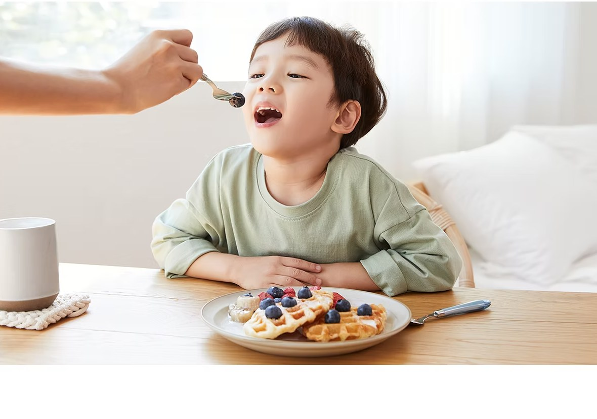
소아비만은
성인비만과 다르게 접근해야 합니다
성장기에는 지방세포의 크기뿐 아니라 수와 대사 환경도 함께 변화할 수 있습니다. 조기 관리가 중요한 이유입니다.
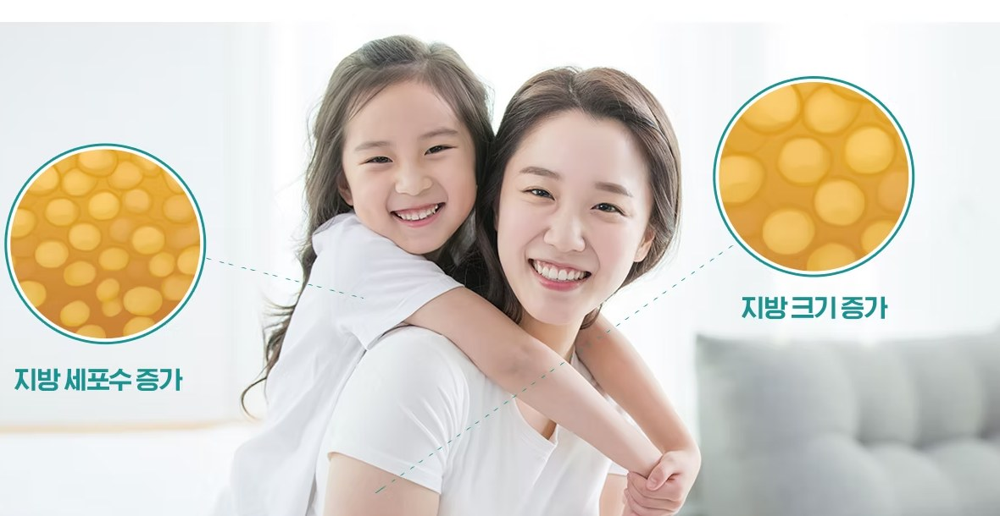
소아비만, 왜 관리가 필요할까요?
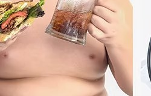
성인비만
대사 건강
성장 방해
심리 위축
소아비만의 원인을 함께 확인합니다
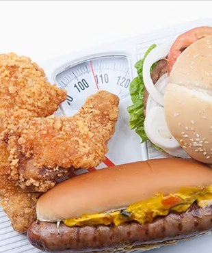
에너지 불균형
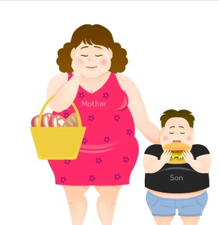
유전적 요인
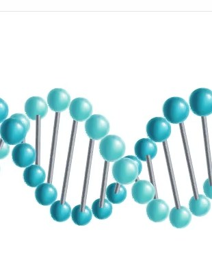
내분비 요인
생활습관 요인
소아비만을 줄이는
성장기 생활습관
성장기 아이에게 필요한 영양과 활동량을 고려하여 체중과 성장을 함께 관리합니다.
균형 잡힌 식단
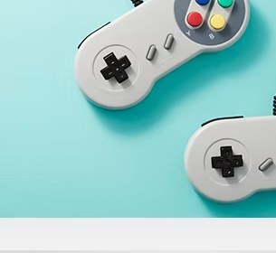
스크린 타임 조절
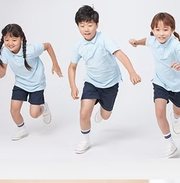
일상 속 움직임
규칙적인 수면
사춘기가 빠른 아이,
성장판 속도를 함께 봐야 합니다
성조숙증은 여아 만 8세 이전, 남아 만 9세 이전에 2차 성징이 나타나는 경우를 말합니다. 사춘기 진행이 빠르면 성장판 변화도 빨라질 수 있어 현재 상태 확인이 중요합니다.
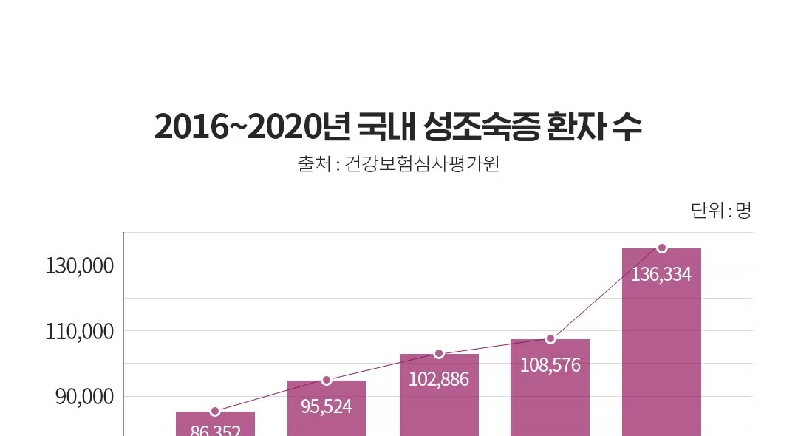
빠른 사춘기가 키 성장에 주는 영향
성호르몬이 이른 시기에 분비되면 일시적으로 키 크는 속도가 빨라 보일 수 있습니다. 하지만 이후 성장판 변화가 빨라져 최종 키에 영향을 줄 수 있습니다.
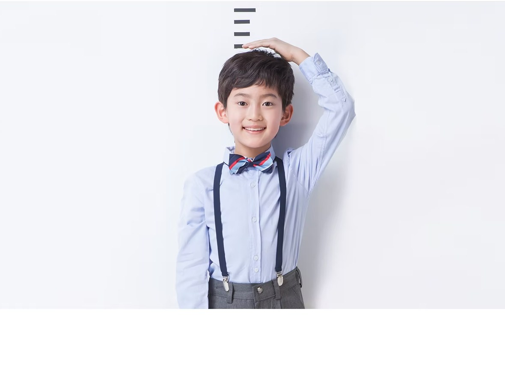
성조숙증 관리는
사춘기 진행과 성장 속도를 함께 고려해야 합니다
성조숙증 치료는 단순히 성호르몬만 보는 것이 아니라 성장 속도, 성장판 상태, 수면, 영양, 체중을 함께 고려해야 합니다.
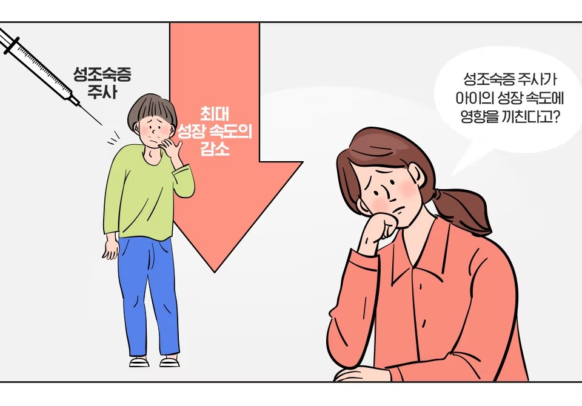
성조숙증 원인을 함께 확인합니다
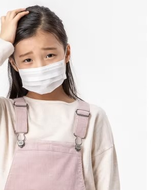
관련 질환이 있는 경우
고지방 섭취가 많은 경우
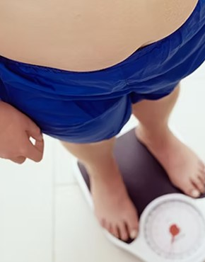
비만이 있는 경우
환경호르몬 노출이 많은 경우
신체활동이 부족한 경우
큰 경우
키만큼 중요한 것,
균형 잡힌 신체 비율입니다
키 성장과 함께 신체 비율, 자세, 하체 균형도 아이의 인상과 자신감에 영향을 줄 수 있습니다. 성장 과정에서 체형과 비율을 함께 살피는 것이 중요합니다.
빠른 사춘기와
신체 비율 변화
사춘기 진행 시기와 성장 속도는 상체와 하체의 성장 균형에도 영향을 줄 수 있습니다. 성장판 상태와 사춘기 단계를 확인하며 체형 균형을 함께 관리하는 것이 중요합니다.
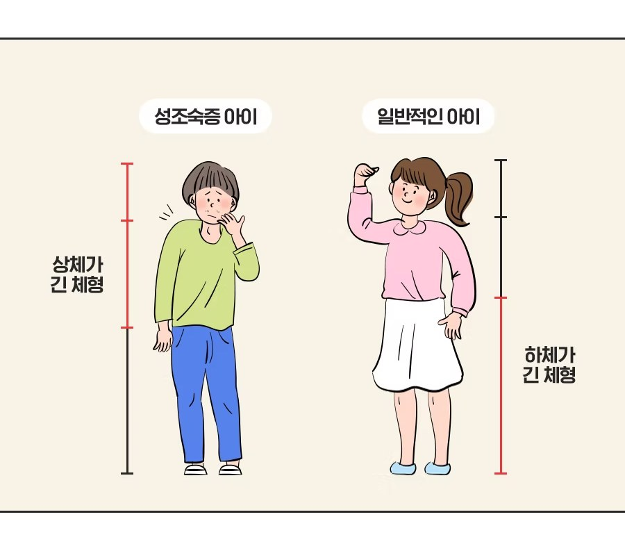
사춘기 진행 시기와 성장 속도는 성장 후 신체 비율에도 영향을 줄 수 있습니다.
자세와 체형도
성장 환경에 영향을 줍니다
나쁜 자세, 근육과 근막의 긴장, 척추·골반 불균형은 아이의 신체 균형에 영향을 줄 수 있습니다. 진단과 운동 관리를 통해 체형과 발육 상태를 함께 확인합니다.
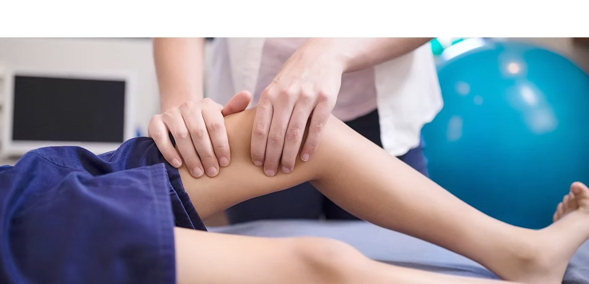
척추 측만, 요추 전만, 거북목, O다리, X다리 등 성장기 체형 문제를 확인하고 아이에게 필요한 관리 방향을 안내합니다.
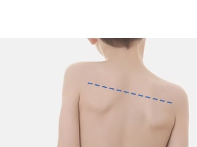
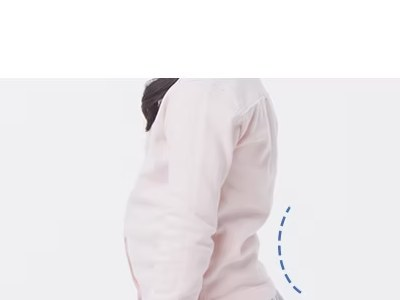
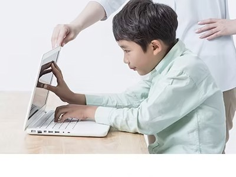
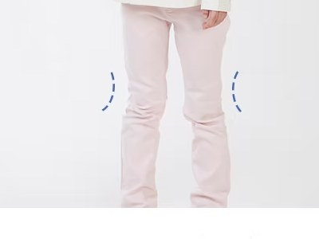
부설 GYM의 전문 트레이너 1:1 지도를 통해 성장기 아이에게 맞는 운동을 진행합니다. 스트레칭과 자세 교정, 근막 이완 관리를 통해 바른 자세와 신체 균형을 돕습니다.
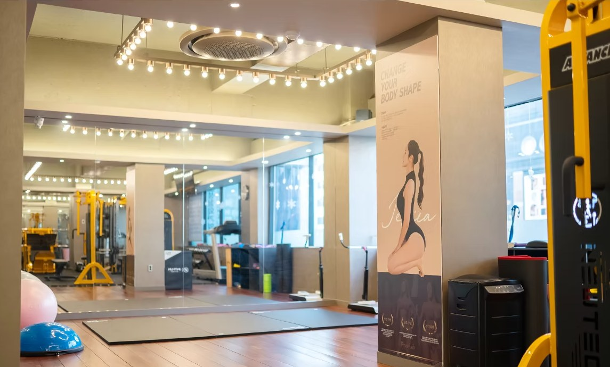
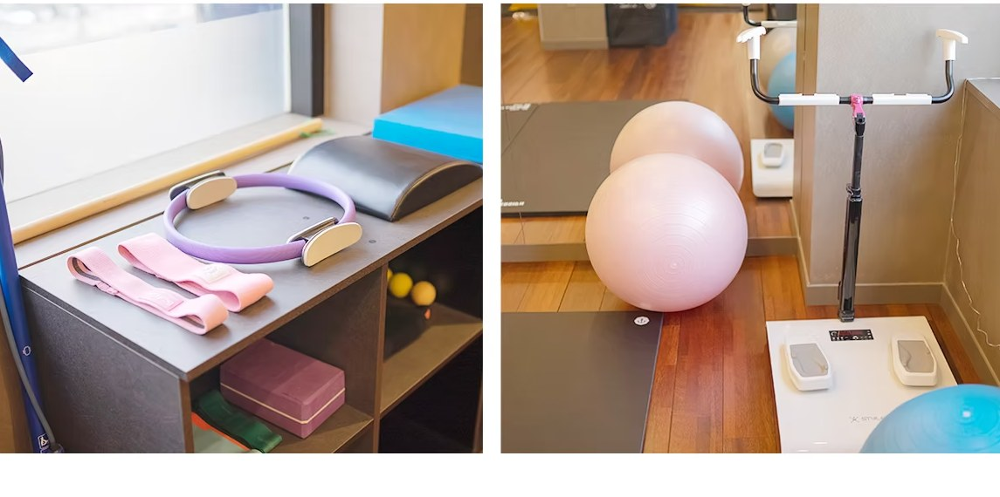
사춘기 후반이라도
현재 성장 가능성을 확인해보세요
사춘기 후반에는 성장 속도가 점차 줄어들 수 있습니다. 하지만 성장판 상태, 호르몬 균형, 자세, 수면, 영양 상태에 따라 관리 방향은 달라질 수 있습니다.
나이별 성장 속도를 확인합니다
각 시기에 맞는 성장 속도를 파악하고, 아이의 현재 상태에 맞는 관리 방향을 정하는 것이 중요합니다.
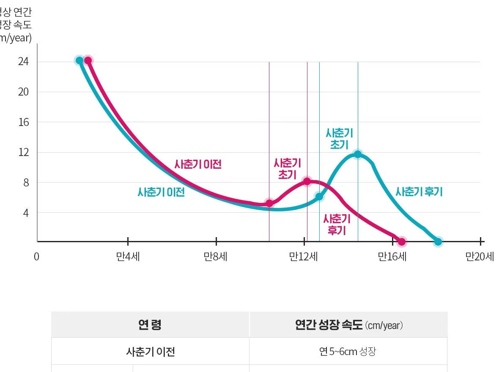
| 연령 | 연간 성장 속도 (cm/year) | |
|---|---|---|
| 사춘기 이전 | 5~6cm | |
| 사춘기 초기 | 남아 | 7~12cm |
| 여아 | 6~11cm | |
| 사춘기 후기 | 이전 성장률보다 감소 | |
성장 가능성,
현재 상태부터 확인합니다
아이의 성장 단계에 맞춰 세분화된 성장 프로그램을 진행합니다.
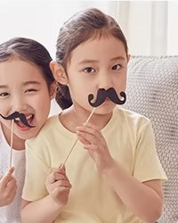
속도 확인
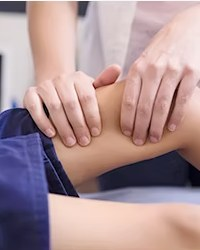
하체 균형
생활 관리
성장 관리
진료 과정
아이의 성장 관리는 아이, 부모님, 의료진이 함께하는 과정입니다. 초진부터 치료 종료 후 경과 관찰까지 지속적으로 성장 상태를 확인합니다.
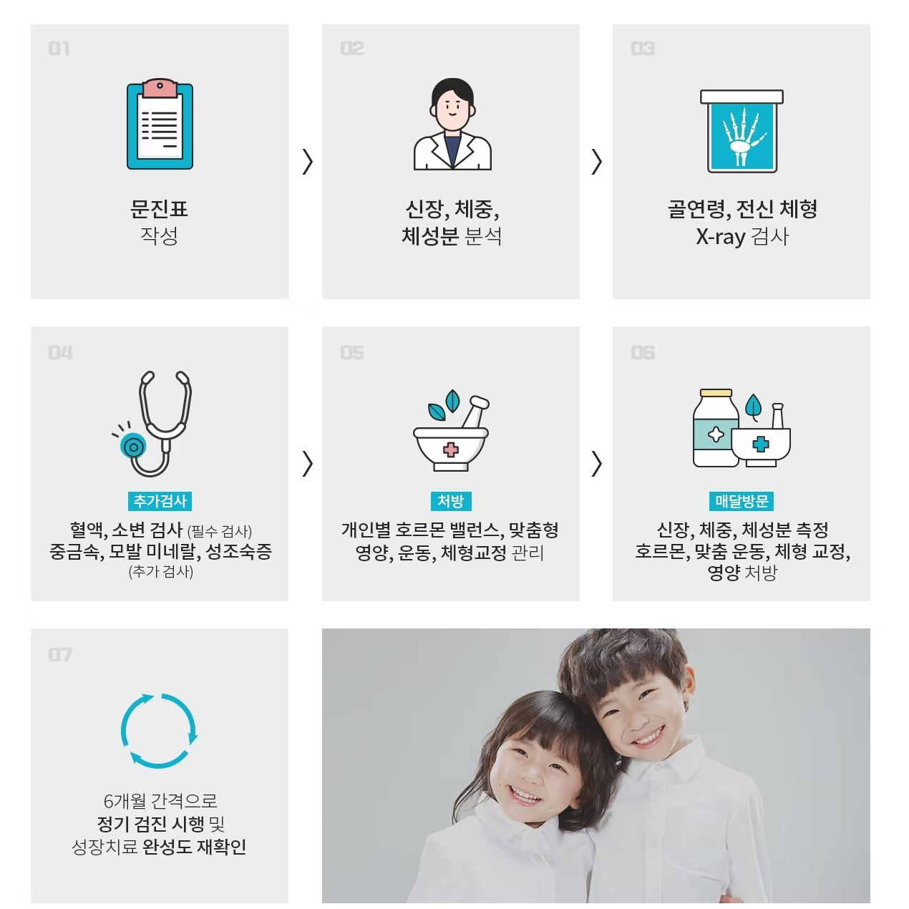
연세새봄에서는
건강하고 균형 있는 성장을
함께 준비합니다
연세새봄은 성장치료 경험을 바탕으로 아이의 키, 체형, 호르몬 균형, 생활습관을 함께 살핍니다. 바른 영양과 수면, 균형 잡힌 성장 관리를 통해 아이의 건강한 미래를 준비하겠습니다.